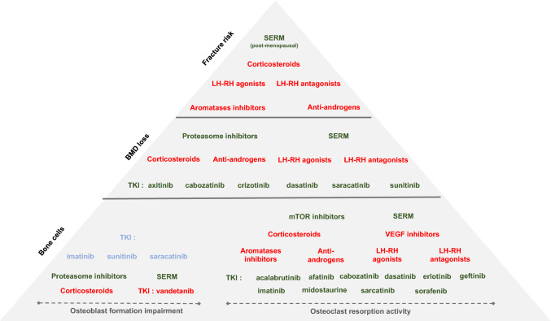
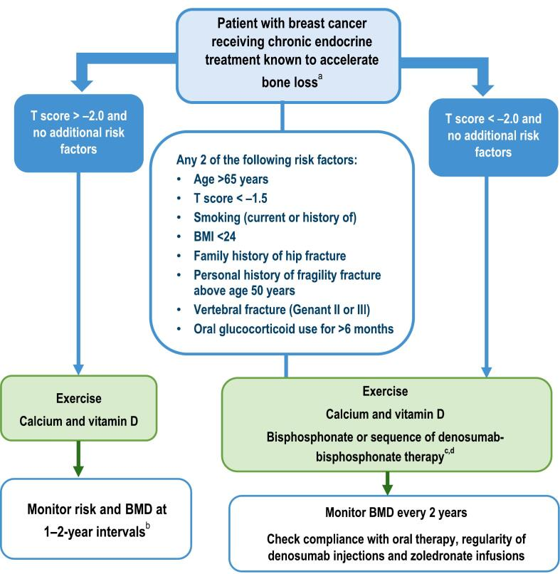

3143 — Mất xương do ức chế buồng trứng + ức chế aromatase ở phụ nữ TIỀN mãn kinh: đọc DXA đúng và ngưỡng điều trị AIBL 2025 / Bone loss on ovarian suppression + aromatase inhibitor in premenopausal breast cancer
Tags: pattern:mat-xuong pattern:gay-xuong-suy-yeu vung:xuong vung:cot-song score:T-score score:FRAX protocol:DXA protocol:VFA
Mức chắc chắn (certainty): tổng hợp y văn (literature synthesis) — dựng trên tuyên bố đồng thuận 2025 của IOF–CABS–ECTS–IEG–ESCEO–IMS–SIOG về mất xương do ức chế aromatase (AIBL) (J Bone Oncol 2025, PMC12301826, CC BY 4.0) và tổng quan tác động xương của thuốc ung thư (Calcif Tissue Int 2025, PMC11950069, CC BY 4.0); các con số nguyên thủy được đối chiếu đúng PMCID gốc, nhóm không có bệnh nhân của mình.
Câu chốt: ở phụ nữ tiền mãn kinh dùng ức chế buồng trứng (OFS, GnRHa) + ức chế aromatase (AI), estrogen bị triệt cả buồng trứng lẫn mô: mất xương nhanh gấp 2–4 lần mất xương sau mãn kinh tự nhiên, nguy cơ gãy đốt sống RR 1,84 và 31,2% vs 18,9% gãy đốt sống trên phim so với người không dùng AI (PMC12301826). Vì vậy DXA nền + ngưỡng AIBL phải nằm trong hồ sơ trước khi bắt đầu nội tiết, và ngưỡng điều trị ở nhóm này thấp hơn ngưỡng loãng xương dân số (T < −2,0, hoặc T < −1,5 kèm 1 yếu tố nguy cơ), không chờ tới −2,5.
1. Tổng quan bệnh học – cơ chế hình ảnh (TẠI SAO)
1.1 Vì sao nhóm này mất xương nhanh nhất trong ung thư vú
- Khoảng 80% ung thư vú dương tính thụ thể estrogen (ER+); nội tiết bổ trợ chuẩn 5–10 năm (PMC12301826).
- AI (anastrozole/letrozole/exemestane) chặn aromatase → giảm gần như hoàn toàn estrogen từ mô mỡ/thượng thận; ở phụ nữ tiền mãn kinh nguy cơ cao, AI còn được ghép OFS (GnRHa) để tắt cả nguồn buồng trứng. Kết quả: estrogen gần bằng 0 ở người vẫn còn 20–30 năm tuổi xương.
- Cơ chế tế bào: estrogen là "phanh" sinh lý của hủy cốt bào — nó giảm RANKL và tăng OPG (bẫy thụ thể), đồng thời thúc hủy cốt bào apoptosis. Mất estrogen → RANKL/OPG tăng → hủy cốt bào nhiều và sống lâu hơn → mất xương xốp trước (cột sống, đầu xương) rồi mất xương vỏ (cổ xương đùi) muộn hơn.
- Số liệu định lượng (bắt buộc):
- AI làm mất xương gấp 2–4 lần tốc độ mất xương sinh lý sau mãn kinh (PMC12301826).
- Phân tích gộp 30 RCT, n = 117.974: RR gãy hông và gãy ngoài cột sống 1,18; RR gãy đốt sống 1,84 (p < 0,001) (PMC12301826).
- Gãy đốt sống trên phim (không triệu chứng): 31,2% ở nhóm dùng AI vs 18,9% không dùng, OR 1,90 (p = 0,03) — độc lập với BMD, nên "T-score đẹp" không loại trừ gãy lún.
- Ở phụ nữ tiền mãn kinh dùng GnRHa + AI: RCT 12 tháng trên 68 người — nhóm denosumab giữ BMD và thông số HR-pQCT, nhóm placebo giảm có ý nghĩa (PMC12301826) → chứng minh mất xương ở nhóm này nhanh và chặn được.
- Kéo dài AI > 5 năm làm nguy cơ gãy tăng thêm (PMC12301826) — thời gian phơi nhiễm là biến số, không chỉ tuổi.

Tháp 3 tầng (nguy cơ gãy – mất BMD – tăng xương): ức chế aromatase (AIs) và LH-RH agonist/antagonist (tức GnRHa/OFS) đều nằm ở tầng giảm BMD (đỏ), và AI còn lên tầng tăng nguy cơ gãy. Corticoid nằm ở cả tầng nguy cơ gãy cao nhất — lý do bệnh nhân vừa AI vừa dexamethasone dài ngày là nhóm nguy cơ kép. Teissonnière M et al., Calcif Tissue Int 2025 (PMC11950069), Fig. 2, CC BY 4.0 — nguyên bản.1.2 Vì sao DXA "thấy" được — và thấy muộn
- DXA (dual-energy X-ray absorptiometry) phát hai mức năng lượng (~40 và ~70 keV). Ở mức thấp, chênh lệch hấp thụ xương – mô mềm lớn (hiệu ứng quang điện ∝ Z³); ở mức cao, hấp thụ chủ yếu do Compton và gần như không phụ thuộc Z. Giải hệ hai phương trình → tách được khối lượng mô mềm khỏi xương, phần còn lại là BMC (g) chia cho diện tích chiếu (cm²) = areal BMD (g/cm²). Đây là lý do DXA không đo mật độ thể tích thật (không phải HU, không phải mg/cm³) và phụ thuộc kích thước xương: người khung nhỏ có BMD areal thấp giả.
- T-score = số độ lệch chuẩn (SD) so với đỉnh khối lượng xương của người trẻ khỏe cùng giới — thang chẩn đoán loãng xương (WHO: T ≤ −2,5). Z-score = so với người cùng tuổi — dùng để phát hiện mất xương "quá mức so với tuổi" và bắt buộc khi đọc DXA ở phụ nữ tiền mãn kinh (< 50 tuổi hoặc còn kinh nguyệt).
- Vì sao phải đo lặp đúng kỹ thuật: thay đổi thật phải vượt least significant change (LSC) — với đa số cơ sở khoảng 2–3% (≈ 0,03 g/cm² ở cột sống). Vì thế hiệp hội khuyến cáo cùng một máy DXA, cùng vị trí, và mốc so sánh 12 tháng; ngưỡng "mất xương nhanh cần điều trị" là ≥ 10%/năm ở bất kỳ vị trí nào (hoặc ≥ 4–5%/năm nếu nền đã thiếu xương) (PMC12301826, Fig. 2 chú thích b).
2. Mẫu hình + chẩn đoán phân biệt theo bối cảnh (gamut)
Mẫu hình: DXA có BMD giảm nhanh giữa hai lần đo (hoặc T thấp hơn tuổi rất nhiều) ở người đang điều trị nội tiết ung thư vú, không có triệu chứng hoặc chỉ đau lưng cấp do gãy lún.
| Bối cảnh lâm sàng | Gamut chính | Chốt định lượng |
|---|---|---|
| Tiền mãn kinh, GnRHa + AI | Mất xương do triệt estrogen kép (nhanh nhất) · suy buồng trứng sớm sau hóa trị · thiếu vitamin D · cường cận giáp thứ phát do thiếu Ca | Mất xương 2–4× mức sinh lý; T giảm thêm ≥ 10%/năm = ngưỡng can thiệp |
| Hậu mãn kinh, AI đơn thuần | AIBL · loãng xương sau mãn kinh · gãy lún do di căn · đa u tủy | RR gãy đốt sống 1,84; gãy lún 31,2% (phim) |
| Đau lưng cấp ở người đang AI | Gãy lún loãng xương · di căn đốt sống · thoát vị đĩa đệm · gãy do suy yếu trên xẹp cũ | MRI: lún dưới đĩa đệm còn nguyên, không phá cuống; di căn: phá cuống, T1 tối, DWI hạn chế |
| Đang/đã dùng corticoid (dexamethasone vì ICANS, phù não, hóa trị) | Loãng xương do glucocorticoid (nhanh, xương xốp) · bệnh cơ do corticoid (yếu cơ, không đau xương) | Corticoid > 6 tháng là một yếu tố nguy cơ trong bảng AIBL |
| Đang dùng denosumab rồi trễ liều | Mất xương bùng phát sau ngừng (rebound) · gãy lún dồn dập nhiều tầng | Phải có thuốc nối (bisphosphonate/zoledronate) trong 6 tháng sau liều cuối |
3. Bảng so sánh phân biệt (ma trận đối chiếu)
| Thực thể | Hình ảnh điển hình | Chốt vào (rule-in) | Chốt loại (rule-out) | Gợi ý xác nhận |
|---|---|---|---|---|
| AIBL/AI + OFS | DXA: T thấp ở cột sống trước, hông theo sau; VFA có gãy lún không triệu chứng | T < −2,0, hoặc T < −1,5 kèm 1 yếu tố nguy cơ, hoặc ≥ 2 yếu tố nguy cơ (không tính BMD), hoặc mất ≥ 10%/năm | T > −2,0, không yếu tố nguy cơ, mất xương < LSC → chưa cần thuốc | DXA nền trước AI + DXA 12–24 tháng, cùng máy; VFA |
| Loãng xương sau mãn kinh đơn thuần | Mất xương chậm, đối xứng, không liên quan phác đồ | T ≤ −2,5 ở cổ xương đùi/toàn hông/L1–L4 | T bình thường + không gãy lún | FRAX (dân số chung) |
| Gãy lún loãng xương | Lún hình nêm/lún đĩa, bờ đốt sống còn, không phá cuống; VFA thấy nhiều tầng | Gãy lún + BMD thấp + không có tổn thương đặc | Phá cuống, mất cuống trên phim/CT, T1 tối + DWI hạn chế = di căn | MRI cột sống (T1 + STIR + DWI) |
| Di căn xương ở người ung thư vú | Nốt/lún một tầng, phá cuống, phần mềm cạnh đốt sống | Tổn thương đặc, bắt thuốc, hạn chế khuếch tán | Nhiều tầng lún đều, mỡ tủy còn, không khối | MRI ± PET/CT; sinh thiết khi còn nghi |
| Cường cận giáp / thiếu vitamin D / kém hấp thu | DXA giảm cả xương xốp và vỏ; gãy xương sườn, bàn tay | Ca thấp + PTH cao; 25-OH-D thấp | Ca/PTH bình thường | Xét nghiệm chuyển hóa (không phải hình ảnh) |
| Đa u tủy | Tiêu xương "khoan lỗ", gãy lún nhiều tầng, DXA có thể bình thường | Đau xương + thiếu máu + điện di protein | DXA bình thường không loại trừ | MRI tủy xương (hạn chế khuếch tán lan tỏa) |
Điểm cần nhớ của ma trận: DXA là phép đo mật độ, không phải phép đo chất lượng xương và không phải phép đo cấu trúc. Vì vậy T bình thường không loại trừ gãy lún (31,2% gãy đốt sống trên phim ở nhóm AI là gãy không triệu chứng), và DXA bình thường không loại trừ đa u tủy/di căn.
4. Protocol chụp + hệ phân độ/điểm chuẩn hóa
4.1 Ai chụp, chụp gì, khi nào lặp
- DXA nền ngay khi quyết định AI — và trước khi bắt đầu OFS ở người tiền mãn kinh (để có mốc so sánh; nếu chưa có, chụp trong vòng vài tuần đầu, đừng chờ hết năm).
- Vị trí bắt buộc: L1–L4 và cổ xương đùi + toàn bộ hông; báo cáo T-score thấp nhất trong các vị trí (PMC12301826, Fig. 2 chú thích b).
- VFA (vertebral fracture assessment) hoặc phim cột sống ngực–thắt lưng khi: T ≤ −1,5, đau lưng mới, chiều cao giảm, hoặc trước khi quyết định có điều trị — vì gãy lún không triệu chứng đổi hẳn phân tầng.
- Nhịp theo dõi: chưa điều trị → 1–2 năm/lần; đang điều trị kháng hủy xương → mỗi 2 năm (PMC12301826; ESMO).
- Ngưỡng "mất xương nhanh" (bắt buộc thuốc): giảm ≥ 10%/năm ở bất kỳ vị trí nào, hoặc ≥ 4–5%/năm nếu nền là thiếu xương (T −1,0 đến −2,5) — đo trên cùng máy, và phải loại nguyên nhân thứ phát (đặc biệt thiếu vitamin D) trước khi kết luận (PMC12301826, Fig. 2).
4.2 Ngưỡng điều trị — ba thang đang lưu hành (2025)
| Nguồn | Ngưỡng bắt đầu kháng hủy xương | Thuốc / liều | Theo dõi |
|---|---|---|---|
| IOF–CABS–ECTS–IEG–ESCEO–IMS–SIOG 2025 (đồng thuận AIBL) | T < −2,0; hoặc T < −1,5 + 1 yếu tố nguy cơ; hoặc ≥ 2 yếu tố nguy cơ (không tính BMD); hoặc mất ≥ 10%/năm | Zoledronate 4 mg IV mỗi 6 tháng (ưu tiên khi mục tiêu là giảm tái phát) hoặc denosumab 60 mg SC mỗi 6 tháng (ưu tiên khi mục tiêu là giảm gãy) | DXA 2 năm/lần |
| ESMO 2020 | T < −2**; hoặc **≥ 2 yếu tố nguy cơ**; hoặc **mất > 5%/năm | Denosumab, alendronate, risedronate, ibandronate, zoledronate | BMD 2 năm/lần |
| ASCO 2019 | T ≤ −2,5 ở cổ xương đùi/toàn hông/L1–L4; hoặc FRAX 10 năm: gãy xương chính ≥ 20%, gãy hông ≥ 3% | Như liều loãng xương | DXA khi T cải thiện → cân nhắc ngừng |
Yếu tố nguy cơ trong bảng AIBL (đếm được, không cảm tính): tuổi > 65; T < −1,5; hút thuốc (hiện tại hoặc trước đây); BMI < 24**; **tiền sử gia đình gãy cổ xương đùi**; **đã gãy do suy yếu sau 50 tuổi**; **gãy đốt sống Genant II–III**; **dùng corticoid uống > 6 tháng (PMC12301826, Fig. 2).
flowchart TD
A[Ung thư vú ER+ bắt đầu AI, hoặc OFS + AI] --> B[DXA nền: L1-L4 + cổ xương đùi/toàn hông + VFA nếu T <= -1,5]
B --> C{T thấp nhất?}
C -->|T > -2,0 và 0 yếu tố nguy cơ| D[Canxi 1000 mg + vitamin D3 800-2000 IU + tập tải trọng]
D --> E[DXA 1-2 năm; tính % mất xương so với nền, cùng máy]
E --> F{Mất >= 10%/năm hoặc >= 4-5%/năm nếu nền thiếu xương?}
F -->|Có| G[Loại trừ nguyên nhân thứ phát: 25-OH-D, PTH, Ca, TSH, celiac]
G --> H[Bắt đầu kháng hủy xương]
F -->|Không| E
C -->|T < -2,0 hoặc T < -1,5 kèm 1 yếu tố hoặc >= 2 yếu tố| H
H --> I{Zoledronate 4 mg IV mỗi 6 tháng hay denosumab 60 mg SC mỗi 6 tháng?}
I -->|Ưu tiên giảm tái phát| J[Zoledronate]
I -->|Ưu tiên giảm gãy| K[Denosumab]
K --> L[Nếu ngừng: thuốc nối trong 6 tháng, không bỏ liều]
H --> M[DXA mỗi 2 năm + kiểm tra tuân thủ + răng/miệng trước khi tiêm]
4.3 An toàn thuốc — ba con số phải nhớ
- MRONJ (hoại tử xương hàm do thuốc): nguy cơ tuyệt đối ~0,05% sau 5 năm và ~0,18% sau 10 năm (467.654 phụ nữ, UK CPRD); trong ung thư vú với liều thấp thường < 1% — nhưng vẫn phải khám răng miệng trước khi bắt đầu (PMC12301826).
- Ngừng denosumab: BMD mất nhanh dội lại và gãy đốt sống dồn dập — phải nối bằng zoledronate IV hoặc bisphosphonate uống ≥ 1 năm, kiểm tra marker chuyển hóa xương sau 3 tháng, DXA hằng năm trong giai đoạn chuyển (PMC12301826).
- Denosumab không phải thuốc chống tái phát ung thư: ABCSG-18 (3.420 người, hậu mãn kinh) cho DFS +2,1% ở 5 năm, HR 0,83 nhưng D-CARE (4.509 người) âm tính → chỉ định vì xương, không vì u (PMC12301826).
5. Biến thể bình thường và cạm bẫy
- Thoái hóa cột sống/vôi hóa ĐMC/xẹp đĩa đệm làm T-score cao giả — "gai xương" được máy tính là xương. Cách tránh: đọc hông, loại đốt thoái hóa nặng, và so chuỗi thời gian thay vì tin một con số tuyệt đối.
- Đo trên đốt vừa gãy lún: vùng nén đặc làm BMD tăng giả ngay sau gãy → không dùng đốt đó để kết luận "đang tốt lên".
- Z-score ở phụ nữ tiền mãn kinh: WHO/ISCD không dùng T-score để chẩn đoán loãng xương ở người < 50 tuổi hoặc còn kinh nguyệt; ngưỡng "thấp so với tuổi" là Z ≤ −2,0. Nhưng bảng AIBL vẫn dùng T-score để quyết định thuốc — nên báo cáo cả hai: T để áp ngưỡng điều trị, Z để nói "mất xương nhiều hơn tuổi".
- FRAX không có ô "AI/OFS": muốn tính phải gán "secondary osteoporosis"; nếu gán mà không nhập BMD, FRAX đánh giá cao giả nguy cơ 10 năm (1.775 người dùng AI, Canada); nhập BMD thì sát hơn (PMC12301826). Ở người đã gãy lún thì FRAX không dùng để quyết định — đã đủ chỉ định.
- Hai máy DXA khác nhau = hai thang đo khác nhau: chênh lệch hệ thống có thể lớn hơn cả mức mất xương 1 năm. Đừng đổi máy giữa hai lần đánh giá "mất xương nhanh".
- "Bệnh nhân đã hết AI thì hết nguy cơ": sai — mất xương tích lũy không hồi phục hoàn toàn, và nhiều bệnh nhân chuyển sang AI kéo dài 7–10 năm hoặc OFS + AI; phải đánh giá lại khi đổi phác đồ.
- Cạm bẫy gắn thẻ "loãng xương" cho đau lưng sau AI: đau lưng cấp ở người BMD thấp vẫn có thể là di căn; luôn hỏi "đau có khu trú + có phá cuống trên MRI không" trước khi quy hết cho loãng xương.
6. Tự lượng giá — Blind Quiz ngay trên trang tĩnh
Ca 1 — Tiền mãn kinh, OFS + AI 14 tháng

- Gợi ý lâm sàng: nữ 44 tuổi, ung thư vú ER+ giai đoạn II, đang GnRHa + letrozole 14 tháng, không đau xương. DXA: L1–L4 T −1,7; cổ xương đùi T −2,1; Z-score −1,4.
- Câu hỏi: (1) Lấy T-score nào để kết luận? (2) Đủ chỉ định kháng hủy xương chưa, theo ngưỡng nào? (3) Z-score −1,4 nói gì?
Bấm để hiện đáp án (findings + chẩn đoán)
- Kết luận: lấy T thấp nhất = −2,1 ở cổ xương đùi (quy tắc "lowest T-score from spine or hip", PMC12301826).
- Chỉ định: T < −2,0 → đủ chỉ định theo đồng thuận AIBL 2025 dù không có yếu tố nguy cơ nào: zoledronate 4 mg IV mỗi 6 tháng hoặc denosumab 60 mg SC mỗi 6 tháng (kèm canxi 1.000 mg + vitamin D3 800–2.000 IU, tập tải trọng). Theo dõi DXA 2 năm/lần.
- Z-score −1,4: nằm trong khoảng dự kiến theo tuổi (> −2,0) — nghĩa là mức mật độ này không "quá thấp so với tuổi", nhưng vẫn thấp hơn ngưỡng điều trị của AIBL; hai thang trả lời hai câu hỏi khác nhau.
- Nguồn ảnh: Hadji P et al., J Bone Oncol 2025 (PMC12301826), Fig. 2, CC BY 4.0.
Ca 2 — "T-score tăng" nhưng đau lưng mới
- Gợi ý lâm sàng: nữ 58 tuổi, AI 4 năm, DXA cột sống tăng 1,2 điểm T so với 2 năm trước, nhưng đau lưng cấp sau khi bê đồ. Không sốt, không sụt cân.
- Câu hỏi: (1) Giải thích nghịch lý "T tăng"? (2) Cần làm gì trước khi kết luận "xương đang tốt lên"? (3) Dấu hiệu nào trên MRI đổi chẩn đoán sang di căn?
Bấm để hiện đáp án (findings + chẩn đoán)
- Nghịch lý: T tăng giả do gãy lún mới (nén đặc) + thoái hóa/vôi hóa trong vùng đo — DXA là phép đo areal, không phân biệt được canxi của xương với canxi của gãy xương và gai xương.
- Việc phải làm: VFA/phim cột sống (hoặc MRI nếu đau khu trú) để tìm gãy lún; đánh giá lại hông; loại các đốt thoái hóa khỏi vùng báo cáo. Nếu có gãy lún → đã đủ chỉ định điều trị, không cần chờ T.
- Đổi sang di căn khi: phá cuống/mất cuống, tổn thương đặc lan ra phần mềm cạnh đốt sống, T1 tối + DWI hạn chế, nhiều ổ rời rạc. (Gãy loãng xương: bờ đốt còn, dải đặc dưới đốt, không phá cuống.)
- Nguồn số liệu: 31,2% gãy đốt sống trên phim ở nhóm AI (PMC12301826).
Ca 3 — Hết 5 năm AI, T −1,9, không yếu tố nguy cơ
- Gợi ý lâm sàng: nữ 47 tuổi, đã hoàn tất 5 năm AI (không OFS), DXA: T −1,9 ở L1–L4, −1,6 ở hông, BMI 27, không hút thuốc, không gãy xương, không corticoid. Bệnh nhân xin "tiêm thuốc cho chắc".
- Câu hỏi: Có chỉ định zoledronate/denosumab không? Nếu không thì làm gì, và khi nào đo lại?
Bấm để hiện đáp án (findings + chẩn đoán)
- Không đủ ngưỡng: T thấp nhất −1,9 > −2,0, và 0 yếu tố nguy cơ → theo đồng thuận AIBL 2025 chưa chỉ định kháng hủy xương; Z-score cũng không ở mức "thấp so với tuổi".
- Làm gì: canxi 1.000 mg/ngày (ưu tiên thức ăn) + vitamin D3 800–2.000 IU, tập tải trọng, giảm rượu/thuốc lá; DXA 1–2 năm/lần và tính % mất xương so với nền (ngưỡng can thiệp ≥ 10%/năm, hoặc ≥ 4–5%/năm nếu nền thiếu xương).
- Bài học: "thiếu xương" (T −1,0 đến −2,5) không đồng nghĩa với "phải tiêm"; quyết định dựa trên ngưỡng + số yếu tố nguy cơ + tốc độ mất xương, không dựa trên lo lắng của bệnh nhân hay của người đọc phim.
Disclaimer y tế: bài này là học liệu tổng hợp, không dùng để chẩn đoán/điều trị độc lập khi chưa có bác sĩ chuyên khoa xương và ung thư đánh giá.
Bài liên quan chéo
- 1679 – Loãng xương do điều trị ung thư (CTIBL): DXA, FRAX và "hút xương" trên CT — bài nền về CTIBL chung, HU đốt sống trên CT cơ hội
- 511 – AIMSS: đau cơ–khớp do ức chế aromatase — cùng thuốc, khác cơ chế (đau khớp, không mất xương)
- 3117 – Bảo tồn sinh sản trước hóa trị ung thư vú — cùng bệnh nhân trẻ, cùng "cửa sổ thời gian"
- 594 – Hóa dự phòng ung thư vú, 510 – BI-RADS nhũ ảnh/siêu âm/MRI
Ảnh
3143_loang-xuong_Diagram_PMC12301826-Fig2.jpg— thuật toán quản lý xương ở người dùng AI (Hadji P et al., J Bone Oncol 2025, PMC12301826, Fig. 2, CC BY 4.0).3143_loang-xuong_Diagram_PMC11950069-Fig2.jpg— tháp tác động xương của thuốc ung thư (Teissonnière M et al., Calcif Tissue Int 2025, PMC11950069, Fig. 2, CC BY 4.0).- Nguồn + giấy phép từng ảnh:
images/CREDITS.md; link bài gốc:sources.md.